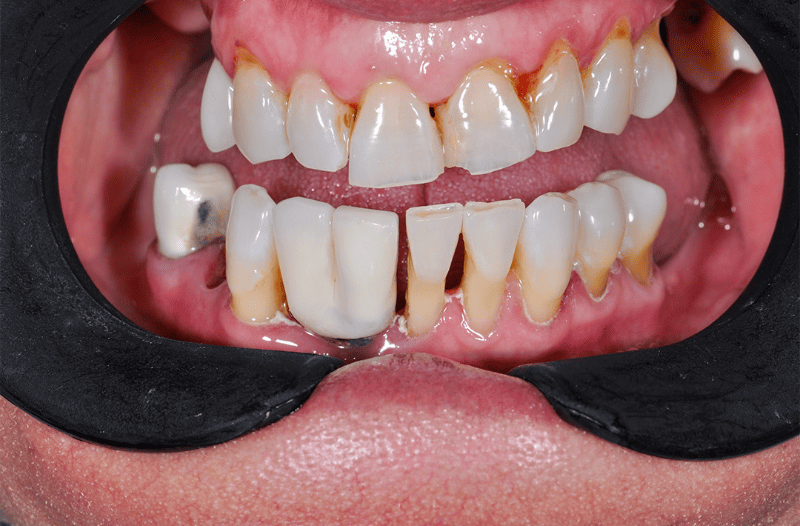
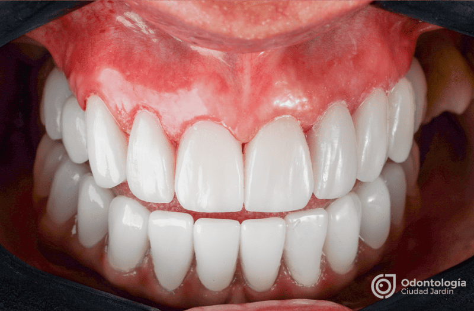
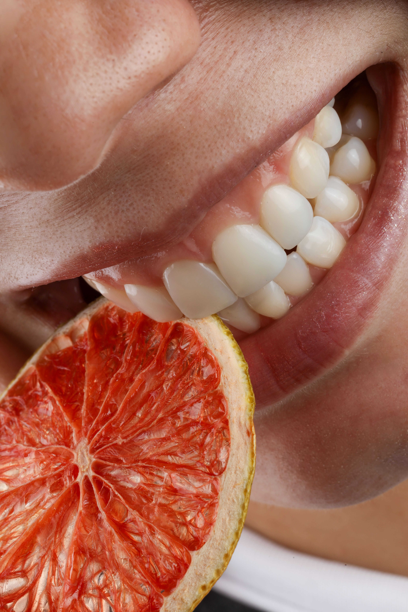
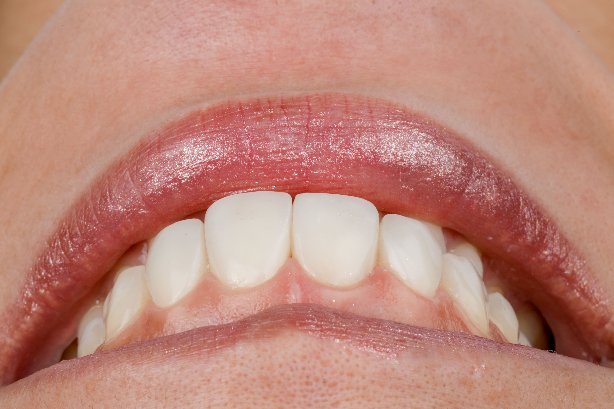
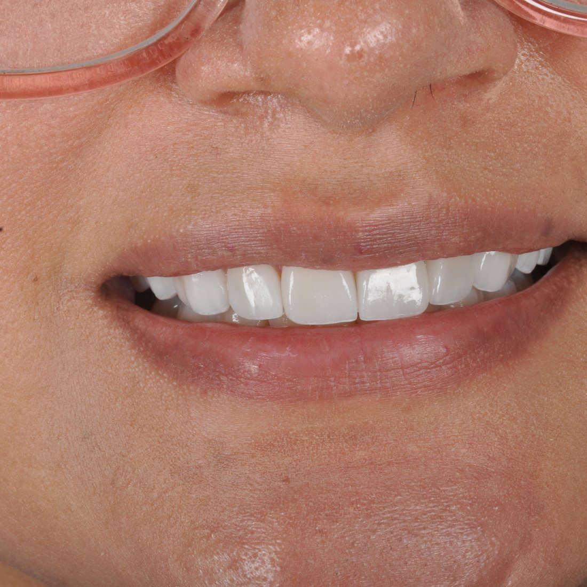
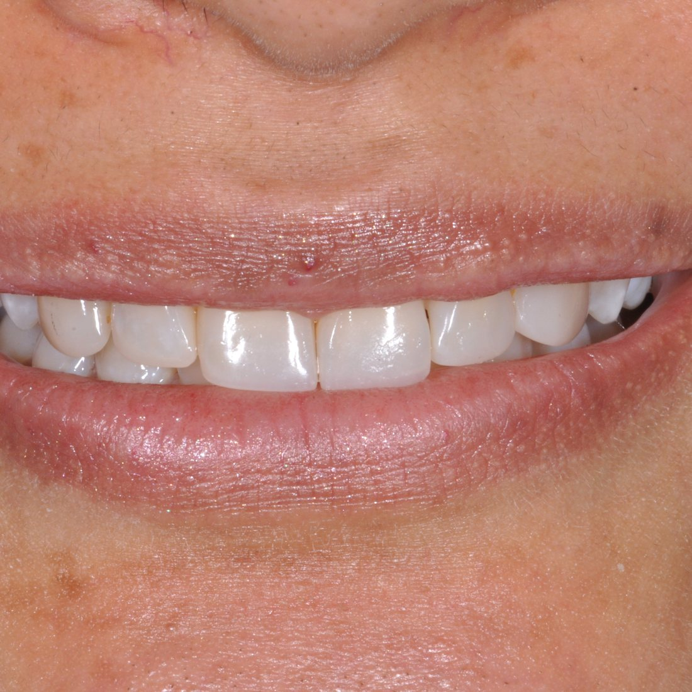
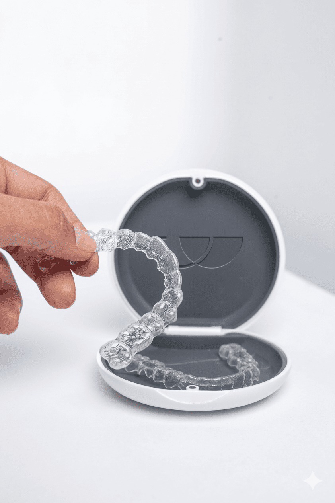
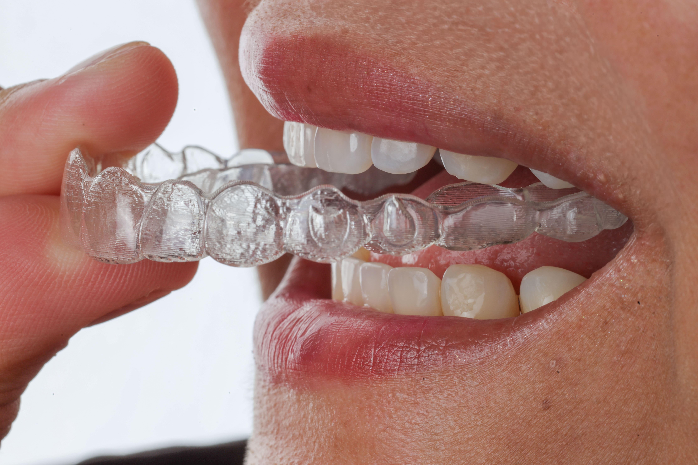
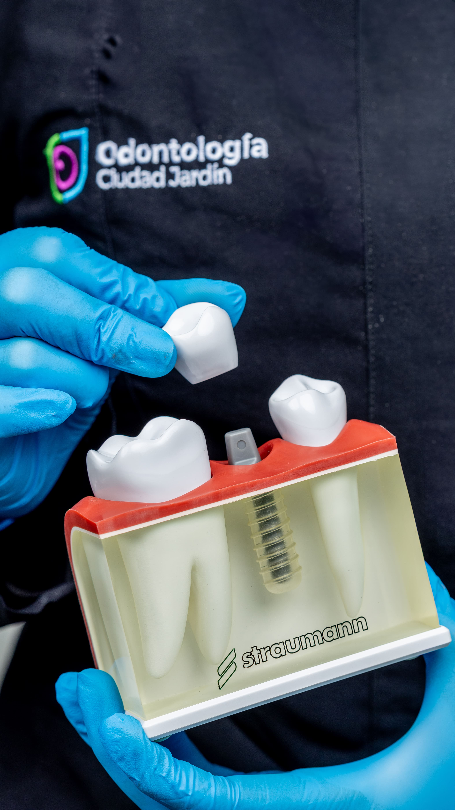
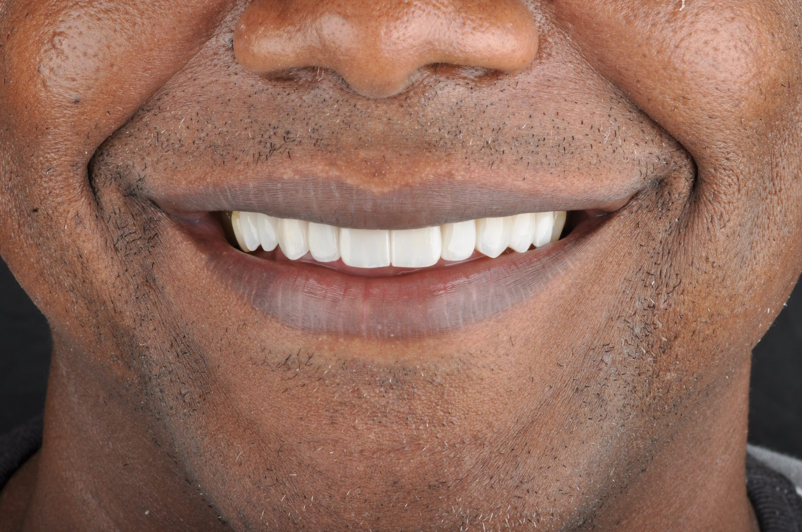

Descubre nuestros tratamientos de excelencia con tecnología de vanguardia, precisión clínica y resultados estéticos excepcionales.
En Odontología Ciudad Jardín combinamos la última tecnología con un enfoque personalizado para ofrecerte los mejores resultados en estética y salud oral.
Desliza las barras para ver el cambio real de nuestros pacientes




Tecnología de vanguardia y resultados de alto nivel
Cuidado integral preventivo y restaurador para mantener la salud oral óptima de toda la familia.
Tratamiento de conductos especializado para salvar tus dientes naturales y eliminar el dolor.
Procedimientos quirúrgicos seguros, desde extracciones complejas hasta cordales, con rápida recuperación.
Atención dental especializada y amigable para niños, asegurando sonrisas sanas desde temprana edad.
Corrección de la posición dental y maxilar con brackets tradicionales o alineadores invisibles.
Tratamiento de las encías y tejidos de soporte para prevenir y curar enfermedades periodontales.
Reemplazo de dientes perdidos o dañados mediante coronas, puentes o prótesis de alta calidad y estética.
Transformación completa de tu sonrisa con carillas, blanqueamiento y análisis estético digital.
Reemplazo permanente de dientes con implantes de titanio y tecnología quirúrgica guiada.
Cuidado proactivo para prevenir caries y enfermedades mediante controles, limpiezas y protección.
Pasa el cursor sobre cada imagen para ver la transformación






Resolvemos tus dudas más comunes
Los resultados suelen durar entre 10 y 15 años con el cuidado adecuado. Las carillas de porcelana son altamente resistentes y mantienen su estética por mucho tiempo.
No, por lo general no duele ya que se aplica anestesia local. Sin embargo, para aquellos pacientes que desean un extra de relajación y seguridad, ofrecemos la opción de sedación bajo solicitud. Al terminar, las molestias son mínimas y perfectamente controlables con analgésicos convencionales.
El tiempo promedio es de 8 a 18 meses, dependiendo de la complejidad del caso. Con nuestra tecnología digital podemos mostrarte el resultado final antes de comenzar.
Aceptamos efectivo, tarjetas de crédito y débito, transferencias bancarias y contamos con planes de financiamiento flexibles.
Generalmente entre 2 y 4 citas. En la primera realizamos diagnóstico digital, fotos y diseño de sonrisa.
Sí. Todos nuestros tratamientos incluyen garantía escrita. La duración varía según el procedimiento (carillas, implantes, rehabilitaciones, etc.).
Agenda tu valoración virtual gratuita y descubre cómo podemos ayudarte a lograr la sonrisa que siempre has deseado.
Más de 1500 pacientes confiaron en nosotros. ¡Tú puedes ser el siguiente!